[Metasploit]-1-渗透测试环境搭建
引言
这篇文章，将图文演示如何在VMware虚拟机中安装Kali Linux渗透测试环境，文中会涉及不同版本的Windows系统与Linux系统的下载与安装，此系列文章将着重介绍Kali Linux中Metasploit渗透测试框架的使用。
文章目录
0×1.如何在VMware虚拟机中安装Kali Linux
VMware的使用不是本文的重点，本文假设读者已经能够熟练使用VMware虚拟机，理解虚拟机的几种网络连接方式，如果对VMware使用还不了解的同学，建议先学习一下简单虚拟机的使用。
首先[点击这里]跳转到Kali官方下载页面，下载"Kali Linux 64 Bit"版本ISO文件。
在本文完成时，最新版本的Kali安装镜像文件版本是"2018.2"，下面我们以"2018.2"版本演示安装过程：
虚拟机资源分配：
× CPU 2c
× 内存 4G
× 磁盘大小 60G
× 网络连接方式 NAT
上面是笔者的Kali虚拟机资源分配，大家可以根据自身机器性能调整，如果需要安装图形化桌面，内存最低建议1G；CPU如果不确定自己机器的核心数量，可以直接选择1个CPU和1个核心；磁盘是动态占用机制，一般Kali安装上后，实际占用大概6G～8G左右的空间，60G是这台虚拟机磁盘占用量的一个上限。
将kali的iso镜像载入后，启动VMware虚拟机，选择"Graphical install"，图形化界面安装方式，如下图所示：
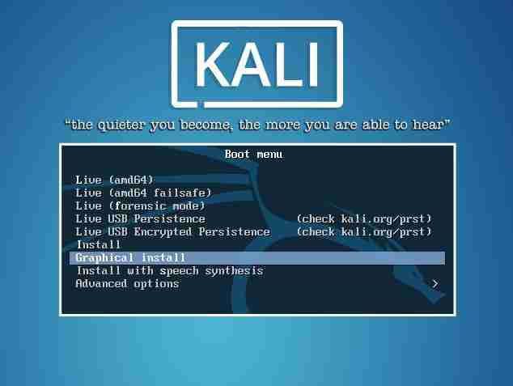下面的安装步骤没有太多可说，直接上图：
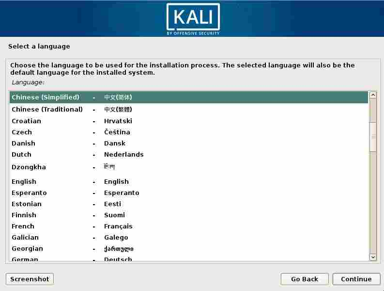 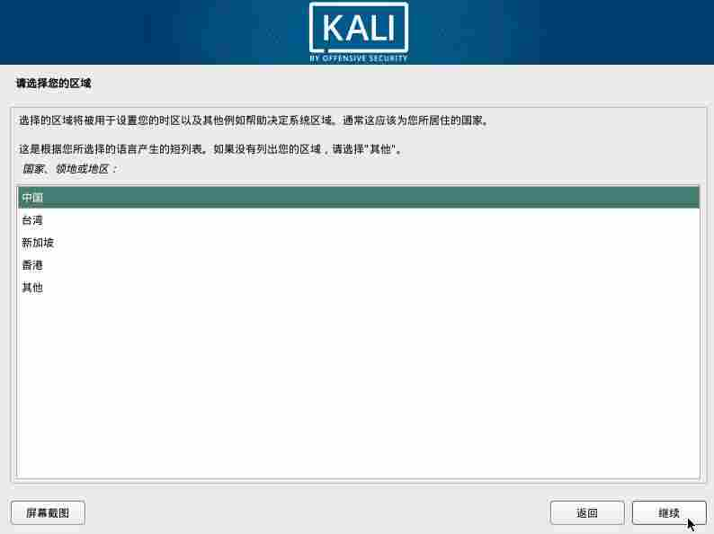 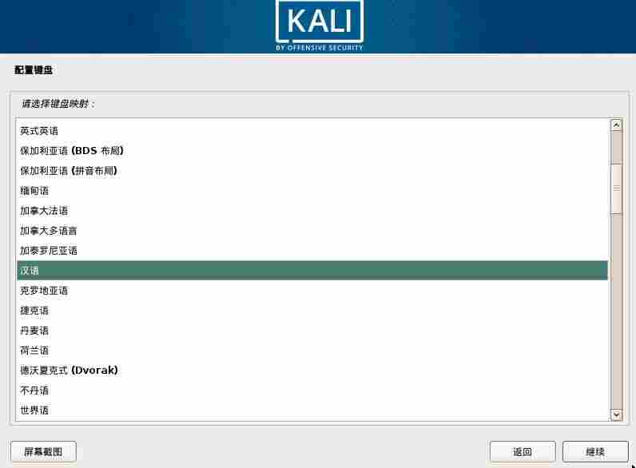输入自定义的主机名与root用户的密码，如下图所示：
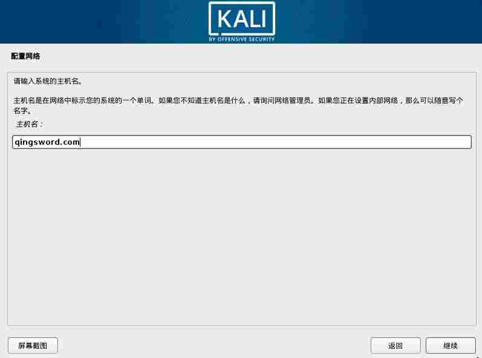 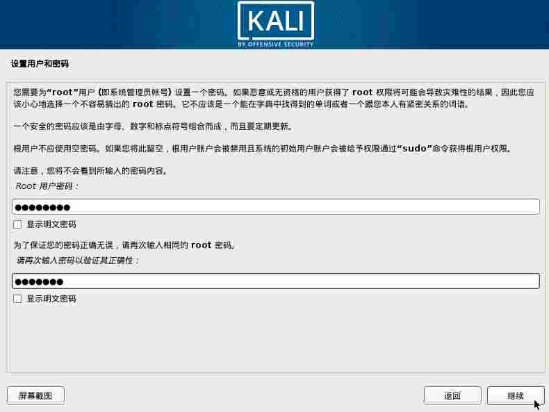如果只是测试环境，安装在虚拟机里面磁盘分区没有太多讲究，直接全盘分给根目录即可，一路默认，在最后一步选择"是"，将更改写入磁盘，如下所示：
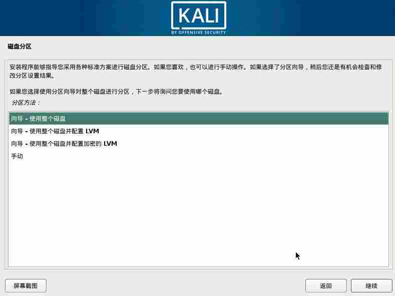 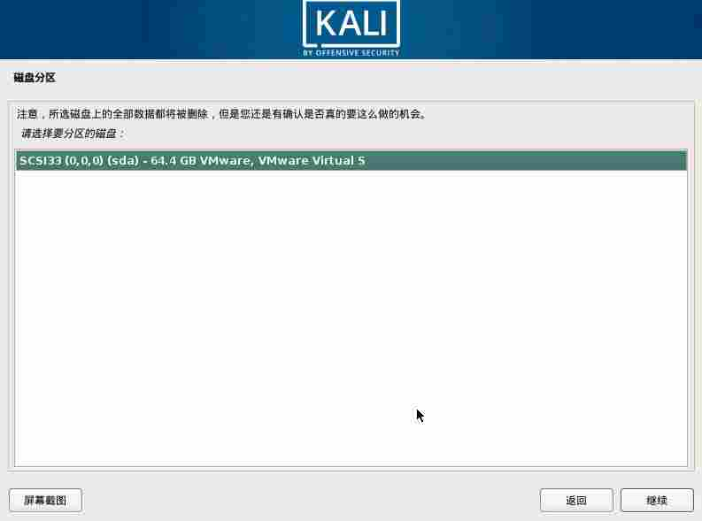 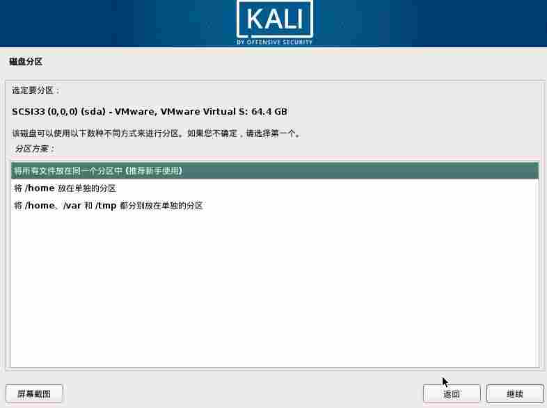 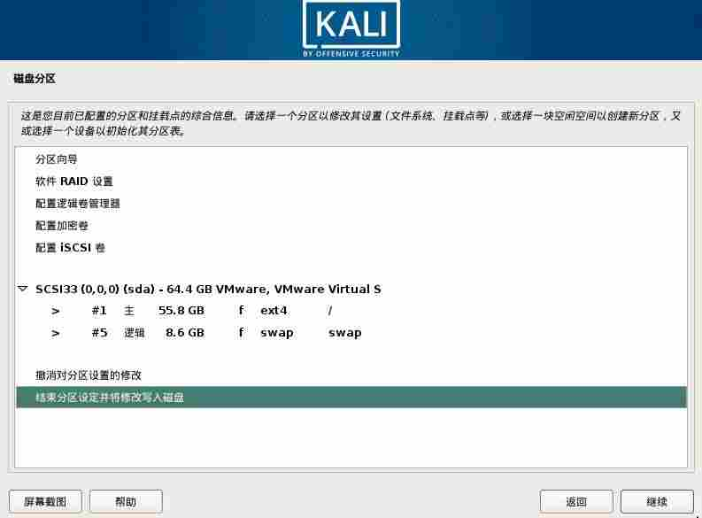 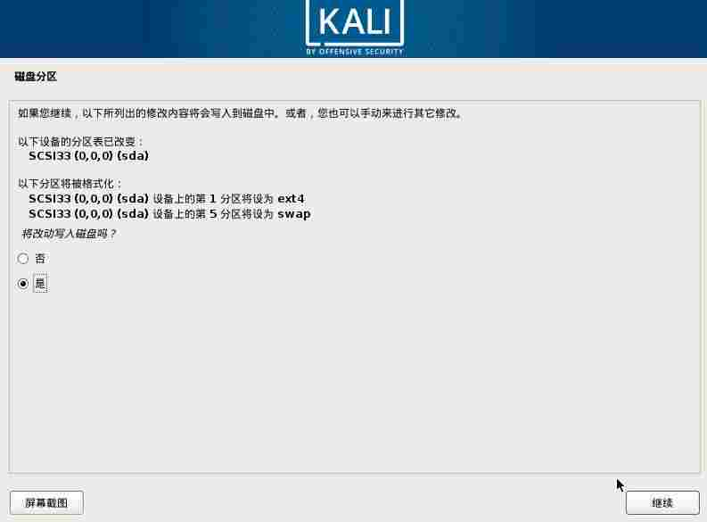不使用网络镜像，在安装时不会联网进行更新，提升安装速度，升级操作可以等到安装好系统后再执行：
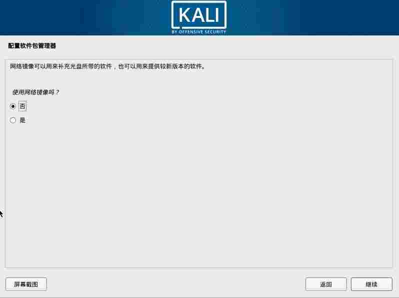安装GRUB，将GRUB安装到/dev/sda：
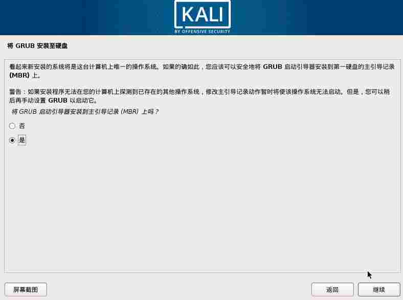 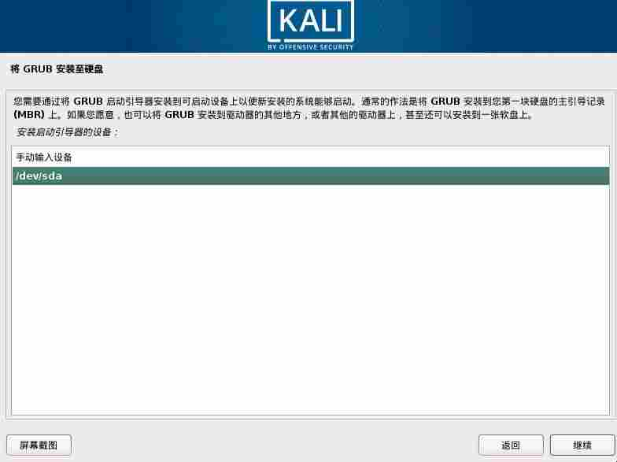完成安装。
0×2.如何在Kali Linux中安装VMware Tools
刚装好的Kali不能自适应VMware窗口大写，也不支持物理机的文件直接复制，这些功能都需要先安装VMware Tools才能实现，点击VMware窗口的VM菜单，选择"安装VMware Tools"，然后打开终端，按照下面的方法安装"VMware Tools"：
#1，进入自动挂载的光驱目录，将VM安装压缩包拷贝到root家目录 root@qingsword:~# cd /media/cdrom root@qingsword:/media/cdrom# ls manifest.txt VMwareTools-10.2.5-8068393.tar.gz vmware-tools-upgrader-64 run_upgrader.sh vmware-tools-upgrader-32 #在这一步中，大家看到的VM压缩包的版本号可能随着时间的推移版本的更新，会与我不同，请按照自己ls出来的文件名为准 root@qingsword:/media/cdrom# cp VMwareTools-10.2.5-8068393.tar.gz ~ #2，切换到当前用户家目录，解压缩 root@qingsword:/media/cdrom# cd root@qingsword:~# ls VMwareTools-10.2.5-8068393.tar.gz root@qingsword:~# tar -vxzf VMwareTools-10.2.5-8068393.tar.gz ,3，进入解压后的目录，使用 "./vmware-install.pl "命令安装，安装过程会提示一些安装路径，一路回车即可，直到看到"Enjoy"，安装完成。 root@qingsword:~# ls VMwareTools-10.2.5-8068393.tar.gz vmware-tools-distrib root@qingsword:~# cd vmware-tools-distrib/ root@qingsword:~/vmware-tools-distrib# ls bin caf doc etc FILES INSTALL installer lib vgauth vmware-install.pl root@qingsword:~/vmware-tools-distrib# ./vmware-install.pl
对这上述安装步骤不是很了解的朋友，可以[点击这里][提取码 0cti]使用百度网盘下载这个视频看看。
0×3.需要下载安装的系统列表
除了kali外，本系列文章还需要安装一些具有漏洞的操作系统，下面整理出需要下载的系统列表，如果条件允许，这些系统都需要安装到VMware中，方便以后的模拟实验，[点击这里]，复制页面中的ed2k连接，使用迅雷下载。